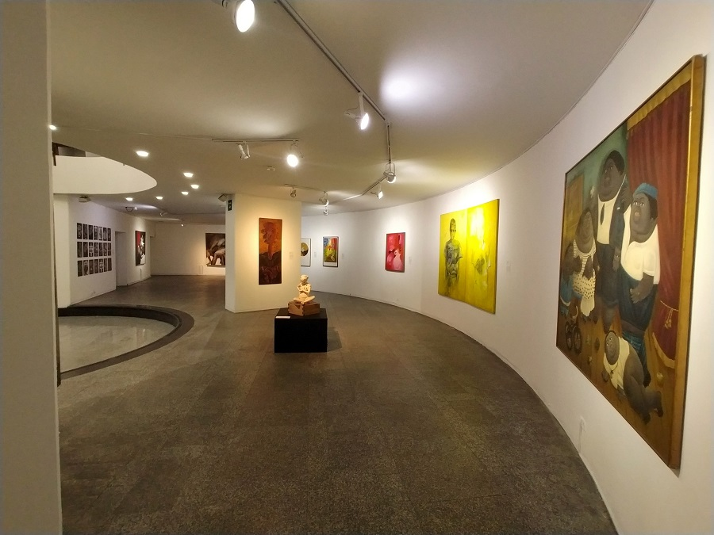
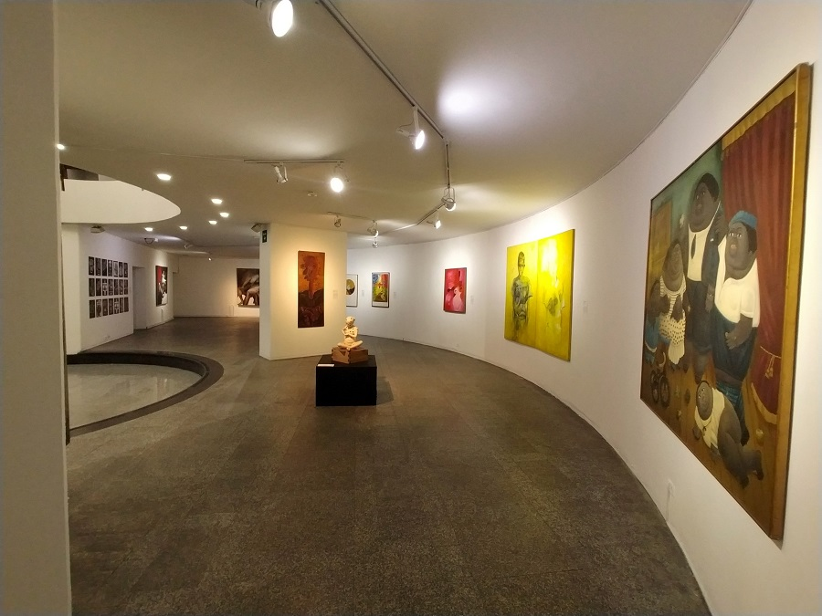

Datos Curiosos del museo
Si quieres conocer más datos curiosos acerca del museo haz clic en 'Datos curiosos'. En el enlace podrás encontrarás información y datos curiosos en relación al museo.
Datos CuriososCiencia e Innovación
Hola! En este apartado encontrarás información referente al Museo de Arte Contemporáneo.
El museo de Arte Contemporáneo de la corporación Minuto de Dios
no tiene exposiciones permanentes. Debido a su limitado espacio,
el museo se ve en la obligación de rotar sus exposiciones cada
cierto periodo de tiempo.
Sin embargo, algunas de sus obras más representativas se encuentran
ubicadas a las afueras del museo.
 


Si quieres conocer más datos curiosos acerca del museo haz clic en 'Datos curiosos'. En el enlace podrás encontrarás información y datos curiosos en relación al museo.
Datos CuriososHey! Sabes? la historia del museo es bastante interesante! si quieres saber más sobre la historia del museo, puedes dar clic en 'Historia del museo'. En el enlace podrás encontrar la historia del museo, además de uno que otro dato curioso.
HistoriaSi deseas conocer más acerca del museo, puedes dar un clic en 'Más información'. En el enlace podrás encontrar diferentes recursos como videos, artículos y demás con los que podrás descubrir más del museo.
Más Información(c) All rights Reserved Designed by Andrés Felipe Lugo Rodríguez - 2021